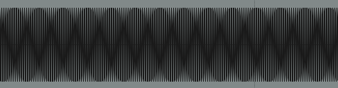
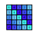

Beginning the journey of training ML models on sound with rudimentary steps.
My first attempt using fastpages to create a post directly from a notebook.

Awesome description
A minimal example of using markdown with fastpages.